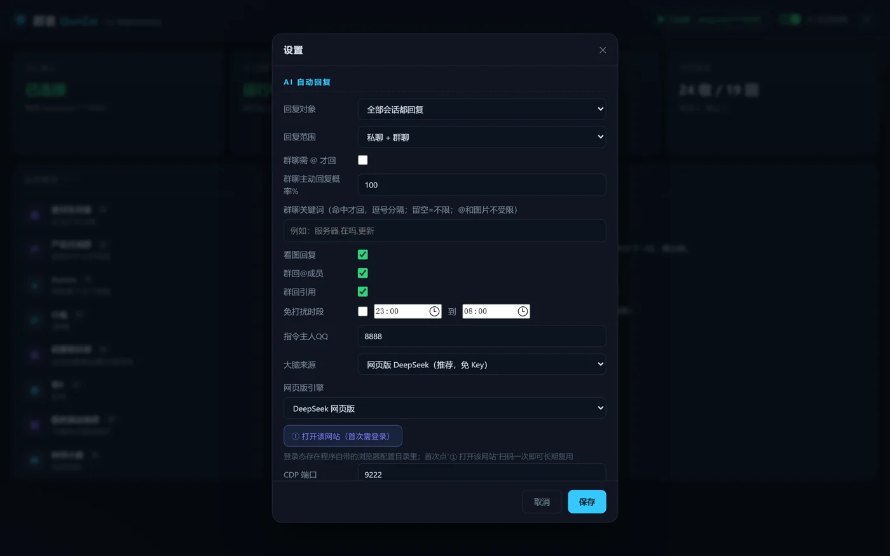
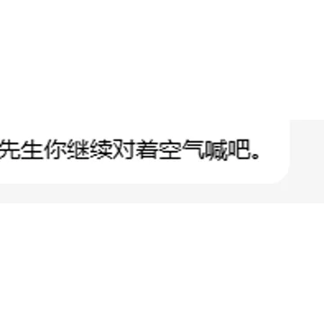
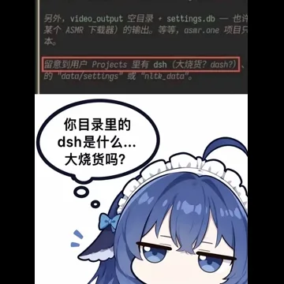
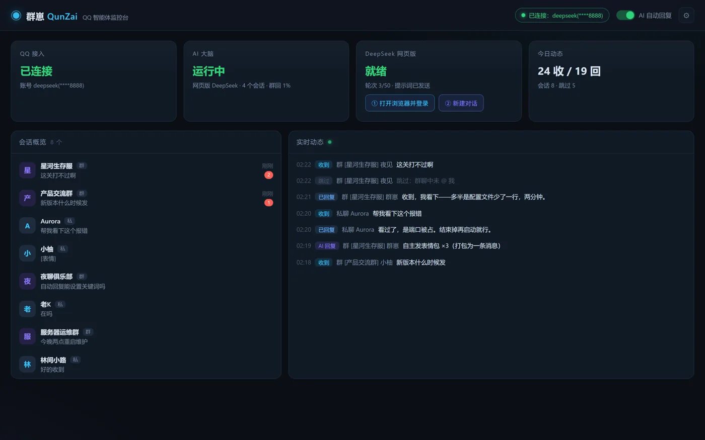
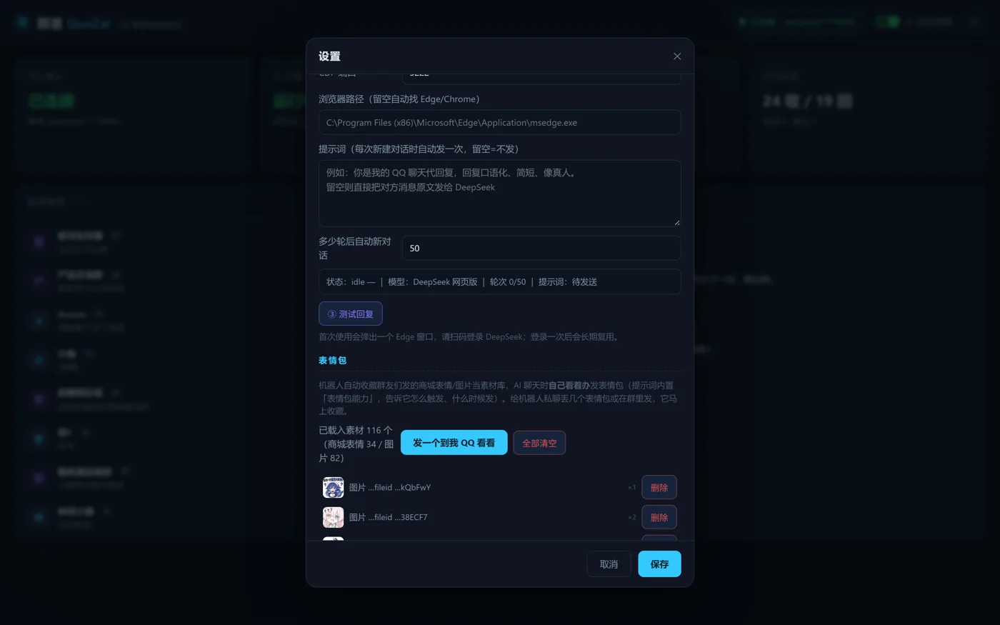
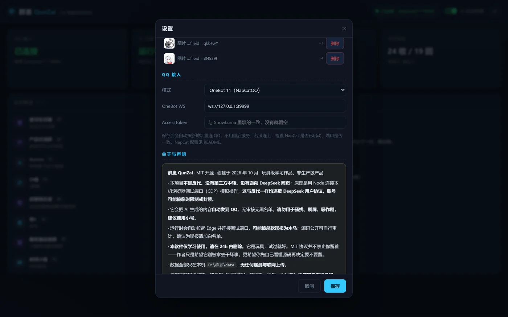

QUNZAI · 群崽
QQ 群里
多了一个 AI 群友
会接话、会发表情、懂分寸的群成员。
装在你自己电脑上，跑在你自己建的群里。
本地运行 · 自己的 QQ 号 · 自己的电脑
向下滚动
它是什么
装在你自己的电脑上
跑在你自己建的群里
群崽 QunZai 是一个本地运行的 AI 群聊助手。接一个 QQ 号，接一个大模型，它就能参与群聊。
不需要服务器、公网 IP、数据库。
和普通机器人不一样
别人是命令
它是聊天
回复频率、插话概率都能在面板里调。
怎么开始
三步，五分钟
装在哪由你决定：自己的电脑、家里的小主机都行。

接入方式
标准 OneBot 11 协议
和 NapCat、SnowLuma、LLOneBot 这些主流框架都能对接，换框架不用改代码，填个地址就行。
内置 NapCat 引擎，装完就能连，不用另外配。想换 SnowLuma 也行，填它解压后的目录即可——它的许可不允许第三方打进安装包，所以群崽只放官方地址、不分发它的文件。
它的大脑
两种模式，随便切
不想折腾 Key、不想绑卡，也能让群先活起来。
同一份配置里切换，不用重装。
网页版 DeepSeek
不用 API Key
登录一次长期可用
API 接口
OpenAI 兼容
更快更稳可量化
想要更好
切到 API 就行
面板里直接测，不用去别处翻。
它在群里怎么说话
不是每句都接
它不会一直刷存在感，只在合适的时候说话。
表情包
113 张
随取随用
表情和语气匹配，不会发错场合。图库在本地，不联网也能用，也能自己加。
发图频率可控，不会刷屏。


群规
违规，它当场处理
命中先提醒，再犯才禁言，误伤可以手动撤。
监控台
一个页面
看全部
实时动态、群列表、会话、运行状态，都在同一个网页面板里，本地 8787 端口。
不需要外网访问，局域网内打开就行。
可观测
每条回复都有记录
出问题时不用猜，翻记录就知道卡在哪。
记录只写本地文件，按天分，方便翻。

数据在哪
不出这台机器
聊天记录、群成员、表情包、配置，全部存在本地。没有云端账号，没有上传，卸载就是删干净。
想搬走，整个目录拷过去就行。

安装
双击，下一步，完成
Node 运行时直接打包在里面，不用装 Python、不用装 Node、不用配环境变量。支持 Windows 10 / 11 64 位。
第一次启动会引导你扫码登录 QQ。
开源
MIT 协议
代码都在
github.com/BlushHorizon/QunZai
想加功能自己改，想改界面自己调，不喜欢的直接删。
没有黑箱，没有偷偷联网。
提 issue、提 PR 都欢迎，文档也在仓库里。
它能干什么
冷场接一句
随口就答
群越热闹它越有用；冷清的群它也会自己找话题。
它的脾气
不知道
就说不知道
不瞎编、不硬答、不为了讨好你编一个答案。这一点比「显得聪明」重要。
拿不准的事情，它会说「我不确定」，而不是编。
对比一下
它不是另一种客服
| 客服机器人 | 群崽 | |
|---|---|---|
| 触发 | 关键词 / 菜单 | 自然对话 |
| 说话 | 模板话术 | 自己组织 |
| 在群里 | 格格不入 | 像个群友 |
| 数据 | 在别人服务器 | 在你自己硬盘 |
一句话：它是群友，不是工单系统。
也说说限制
它不是万能的
这些我都写在 README 里了，没有藏着。
这些限制不是 bug，是它的使用前提。
